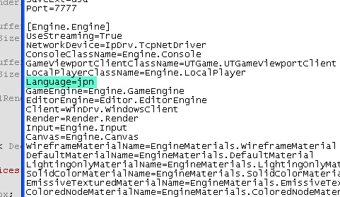

UDN
Search public documentation:
LocalizationReference
日本語訳
中国翻译
한국어
Interested in the Unreal Engine?
Visit the Unreal Technology site.
Looking for jobs and company info?
Check out the Epic games site.
Questions about support via UDN?
Contact the UDN Staff
中国翻译
한국어
Interested in the Unreal Engine?
Visit the Unreal Technology site.
Looking for jobs and company info?
Check out the Epic games site.
Questions about support via UDN?
Contact the UDN Staff
UE3 Home > UnrealScript > Localization Reference
Localization Reference
Overview
Localized Text
Localized Text Files
See the Localized Text Files page for information about the file format, as well as working with string and binary data.Directory Paths
The engine looks for localizated text files in a configurable selection of paths (Core.System.LocalizationPaths, defaulting to "Engine\Localization"). When localizing a resource, it first looks in the currently configured language localization file. If it fails to find a localized version of that resource, it then looks for an entry in the international (English) localization file (.INT).Exporting
In addition to using the Full Loc Export... in UnrealEd, theexportloc commandlet is also available.
The exportloc commandlet will export localized strings in UnrealScript packages to a localized text file:
gamename.exe exportloc
Setting the Active Language
The language can be changed by setting the Language variable in your game project's Engine configuration file to the specified language, which correlates to a localization directory. For example, this is how you would set the language to Japanese:[Engine.Engine] ... Language=JPN ...
Testing
To test the localization, create a fake language called XXX. Replace all characters with the letters X. This makes it real easy to spot missing localized text.Translation Workflows
Translators should work on the localization files (text), not the content (binary). Be wary about accepting resaved content from external teams. Who knows what other properties, hacks, etc. can be applied to those content packages! When new objects are created that require localization, simply perform a Full Loc Export... from within the editor. This will not stomp on existing loc data because this data will already be in memeory at the time of export. Our workflow for Gears of War was to provide each international (English) localized text (.INT) file, as well as an updated diff for the file, in order to demonstrate to the translators what new localized objects or object properties had been created (re-exported) since the last update; they were responsible for propagating to these new strings to their language version of the file. Alternatively, if one's faith in the localization team's ability to handle diffs is low, one could re-xport localized text files for each language individually by simply set the engine language to the target language before opening the editor and exporting. In this manner, you can just send the INT files directly to translators. For Gears of War, localization teams were provided with localization files and watermarked builds so that the content can be tested in-game. We only accepted changes that were made to the localization files, for reasons described above. We do not have any additional steps to get the localization files into something more editing-friendly, such as Excel. We rely on the localization teams to massage the data into whatever internal formats they need.Localized Content
Textures
NOTE: Streaming localized textures are not supported by the engine by default because the texture offset into the cooked texture file is stored in the seekfree package.Audio
Audio localization requires some setup. The easiest (and recommended) process is to split off all the sound cues and put them in packages in 'MyGame\Content\Sounds', then put all the localized audio wave packages in subfolders named by the three letter language code. This yields something of this ilk -
MyGame\
Content\
Sounds\
MainCharacterVO_cue.upk
EnemyVO_cue.upk
INT\
MainCharacterVO.upk
EnemyVO.upk
JPN\
MainCharacterVO_JPN.upk
EnemyVO_JPN.upk
When localized sound cues are loaded, it will load the sound waves for the selected language. This means any sound cue changes will be applied uniformally to all languages with a single edit.
A sound cue is judged to be localized if it references sound waves in a three letter subfolder that matches a known language code, or it has subtitles. If you use the above folder layout, everything will be localized as you expect. See the case study below for a more concrete example.
Movies
Some videos have a corresponding .txt file which to relate to keys in the 'Subtitles' localization text file, along with their appearance time. The .txt files are simply for subtitles, nothing to do with the audio being played. These must be made by hand, with the appropriate timings (the first line is number of ticks per second, that the rest of the lines use to determine start/stop times for the line). For audio in the movies, make a Bink movie and mix in all the languages into the movie as a collection of channels. What we do is remap the front left, front center and front right tracks to the localized audio, then have common rear and subwoofer tracks for all languages. The functionFBinkMovieAudio::SetSoundTracks() will return the array of channels that maps to the speakers, thusly -
| INT | FRA | ITA | |
| Front Left | 0 | 6 | 9 |
| Front Right | 1 | 7 | 10 |
| Front Center | 2 | 8 | 11 |
| Subwoofer | 3 | 3 | 3 |
| Rear Left | 4 | 4 | 4 |
| Rear Right | 5 | 5 | 5 |
Localizing UnrealEd
Case Study: Localization in Gears of War
- Dialog -- sound which are lines of dialog that are issued in unique scripted situations.
- Chatter -- lines of dialog issued by a player as a result of an unscripted gameplay situation. For example, frustration with a jammed gun, triumph when taking down an enemy, etc.
- Efforts -- gameplay sounds containing no speech -- grunts, yells, pained sounds, etc.
Language Codes
| INT | American English (not Rest of World English) |
| JPN | Japanese (no TTS support) |
| DEU | German |
| FRA | European French (not Canadian French) |
| ESM | Latin American Spanish (Modern?) (no .NET, Speech Recognition support) |
| ESN | European Spanish (Iberian? Castilian? Traditional?) |
| ITA | Italian |
| KOR | Korean (no TTS support) |
| CHT | Chinese Traditional (No Speech Recognition or TTS support) |
| RUS | Russian (No Speech Recognition or TTS support) |
| POL | Polish (No Speech Recognition or TTS support) |
| HUN | Hungarian (No Speech Recognition or TTS support) |
| CZE | Czech (No Speech Recognition or TTS support) |
| SLO | Slovakian (No Speech Recognition or TTS support) |